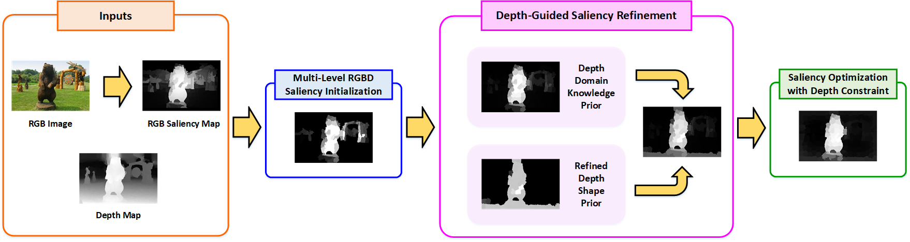

Going from RGB to RGBD Saliency: A Depth-guided Transformation Model
Introduction:
-
Depth information has demonstrated to be useful for saliency detection. However, the existing methods for RGBD saliency detection mainly focus on designing straightforward and comprehensive models, while ignoring the transferable ability of the existing RGB saliency detection models. In this paper, we propose a novel depth-guided transformation model going from RGB saliency to RGBD saliency. The proposed model includes three components, i.e., multi-level RGBD saliency initialization, depth-guided saliency refinement, and saliency optimization with depth constraints. The explicit depth feature is firstly utilized in the multi-level RGBD saliency model to initialize the RGBD saliency by combining the global compactness saliency cue and local geodesic saliency cue. The depth-guided saliency refinement is used to further highlight the salient objects and suppress the background regions by introducing the depth domain knowledge prior and refined depth shape prior. Benefiting from the consistency of the whole object in the depth map, we formulate an optimization model to attain more consistent and accurate saliency result via an energy function, which integrates the unary data term, color smooth term, and depth consistency term. Experiments on three public RGBD saliency detection benchmarks demonstrate the effectiveness and performance improvement of the proposed depth-guided transformation model from RGB to RGBD saliency.

-
Runmin Cong, Jianjun Lei, Huazhu Fu, Junhui Hou, Qingming Huang, and Sam Kwong, Going from RGB to RGBD saliency: A depth-guided transformation model, IEEE Transactions on Cybernetics, 2019.
-
The code is tested on Windows 10 64bit with MATLAB 2014a. If you use our code, please cite our papers. [Link]
-
[1] R. Cong, J. Lei, C. Zhang, Q. Huang, X. Cao, and C. Hou, "Saliency detection for stereoscopic images based on depth confidence analysis and multiple cues fusion," IEEE Signal Processing Letters, vol. 23, no. 6, pp. 819-823, 2016. [Project]
[2] R. Cong, J. Lei, H. Fu, W. Lin, Q. Huang, X. Cao, and C. Hou, "An iterative co-saliency framework for RGBD images", IEEE Transactions on Cybernetics, vol. 49, no. 1, pp. 233-246, 2019. [Project]